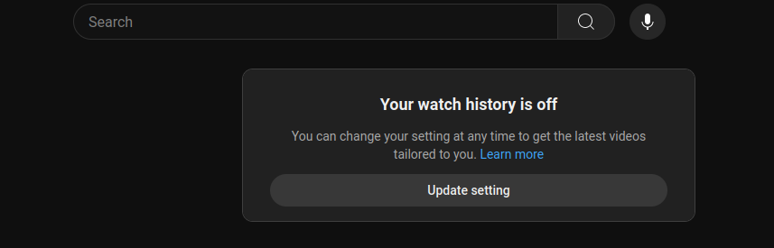
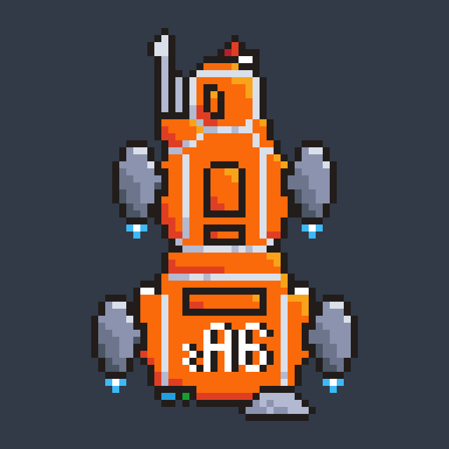

This is more of a reminder to my future self. I've worked all my life to reduce clutter. I hate having more things than I absolutely need: photos on my phone, games on my PC or wires on my desk. Given a significant amount of my time used to go to organizing myself, I found it wise to invest in building systems that would help me organize less and do more. It was first todo apps from the Play Store, then my custom-built todo apps (I've built at least 10 till now), using a notepad and finally using Notion. More on this later. I'm sharing my experiences and tips, along with the context that shaped them, in hopes that it will help people get much more from their digital life and also free up more time to do things other than scrolling their YouTube Shorts feed (even though the cat reels continue to be as adorable as ever).
Notes and ToDos

I'm quite satisfied with my current setup, but I would love to have these physical cards.
This is what I have spent half my life doing. I have used physical paper, Microsoft Word, Google Docs, Evernote, Joplin, Notion, and two dozen other apps that I ultimately chucked away within a couple of days. Of these, I still use Notion and Joplin, but mostly Notion. I will give my Notion setup towards the end, but here's why I think it gives you the most bang for the buck:
- It's pleasant on the eyes (I really value good UI)
- Free to have on all your devices (I use three)
- Extremely customizable (Some things require a minimal setup and other things require a lot of bells and whistles)
For 99% of the population, a free Notion account will be more than enough. Until a month ago, Joplin used to be my main note-taking app. I still prefer it for personal journalling, given its open-source nature and I can use my server to store sensitive data. But all my other stuff, including to-do lists, random notes, project plans and more structured data goes to Notion.
Social Media and News
My biggest time sink, neutralized. Misalignment credits: YouTube.
I'm not a heavy social media user, so what works for me might not work for you. I used to have at most 30 friends on my Facebook when I had an account, to put things in context. These days, I use a few websites for specific purposes:
- Instagram: To catch up on things I'm interested in. Notice the wording, "things" not "people". I don't follow anyone I know, I feel weird seeing posts telling very different stories of people I personally know. I would rather catch up with these folks over a call. Instagram still has tonnes of cool artists and adorable animal videos, and I've spent hours tuning my feed to only show me that. The latter can still waste hours for me though, so I have set an app timer for 15 minutes using my phone's built-in well-being features.
- YouTube: Same as Instagram, but different topics. I've noticed how in recent years people are using YouTube more and more for vlogs, this might be the parasocial relationship pandemic I keep hearing about. I am subscribed to two channels right now: one about science news and another about tech news. I have turned off my history (which also turns off your home feed) and if I ever want to watch someone in particular, I search for them but never subscribe to them. This has freed up hours for me.
- Discord: Two small servers (less than 1k members), I get to talk to like-minded people I would have a hard time finding near me. I also hear a lot of my friends getting career help through Discord, so if you are not having a tonne of luck on LinkedIn, be sure to network on big Discord servers.
Other than this, I spend a handful of minutes weekly on LinkedIn, Reddit, Hacker News and X. I avoid conventional news media like the plague: anything important enough will reach me through Discord or Reddit. It takes some time to get used to, but I don't feel guilty about wasting my time when I go to sleep, and that more than makes up for any FOMO. I would also like to share more stuff I build on Instagram and YouTube, that's the only thing I find missing from my social media experience. I find OTT content way more fulfilling than YouTube, although I am reluctant to start new shows (and then not binge-watch them).
Side Projects
Another project that I probably won't be completing.
I struggle with managing my hobbies and side projects. It is not uncommon for me to work more on weekends than on weekdays. I find it almost impossible to relax, given there's always something to do. I'm writing this very blog post on a Saturday night, when I promised myself I would have a restful weekend playing games, catching up on some shows and just lying on my sofa. I don't notice how thin I've spread myself until I catch myself working on my side-side-side-side project, although I am getting better at this. I've been the least successful here, so take my advice for what it's worth:
- Don't start something new until you have finished something.
- Finished doesn't mean perfect, it means it is in a state to be used/shared with the world and you are done with it.
- Sometimes, the sunk cost fallacy is not a fallacy. Stick to projects in the "valley of despair".
Notion Setup

My Notion header image, I really love pixel art.
Here are the fundamental rules I have for myself:
- More breadth, less depth. The fewer clicks a note needs, the more often it will be used. So don't have ten layers of page links. Keep as much as possible visible to you by default.
- Don't note it down unless necessary. When migrating my data from Joplin to Notion, I noticed similar notes under different notebooks that could be merged, notes that I never used, and notes with more detail than necessary. I'm much more reluctant to add things to Notion now and when I do, I make them as atomic and useful as possible.
- More eye candy. For some people, writing notes on Emacs will be good enough, but I like pretty things. I'm using emojis and images everywhere, and I like using the app more now.
- One page for day-to-day that has everything you need. For my Dashboard, I have my daily to-do lists, weekly todos, reminders about things I tend to forget, links to important notes and lastly a list of projects I'm working on. And my favourite pixel art gif.
I know this isn't the most detailed or artsy Notion setup, but there are tonnes of those on YouTube. I want to spend less time organizing myself, and this setup gets the job done.
What works for me now probably won't work for me in ten years. The tips I've provided here should prove to be a solid starting point, but I believe it will be worth it to spend some time each week experimenting and recording your success (I built a tool for that, check it out: _clarity ).
Please send your views to my email: 9.harsh.agarwal@gmail.com